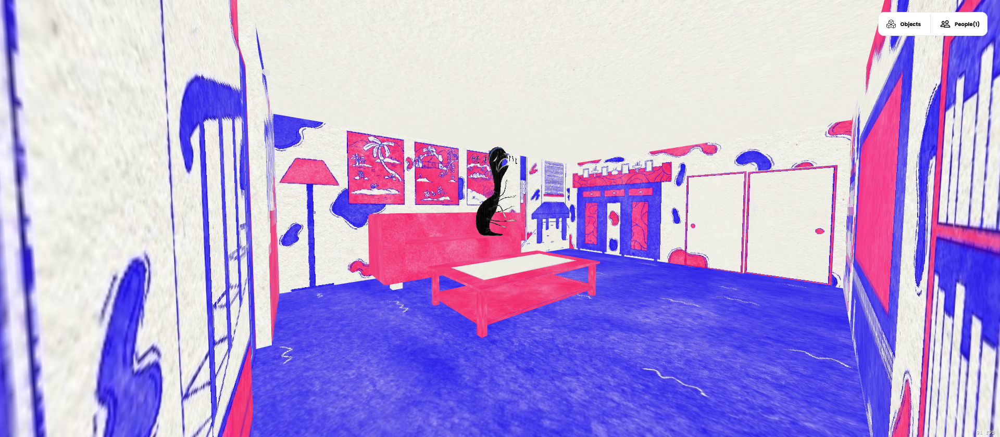

A 3D environment consisting of interconnecting rooms, each being a representation of certain traumas in my childhood. As a kid, I always wanted someone I could talk to about the things that were happening at home, but I would be in constant fear that no one would believe me and that I would get in trouble for it. So, I just internalized everything, which in turn, did more harm than good. However, I'm finally at a point in my life where I can confidently say that I'm pretty content with where I am today. I used to let my guilt stop me from going into this sort of subject, but now, I feel okay talking about it.
And so creating this piece was a way for me to finally acknowledge everything that happened and showing this piece publicly will be the first time I tell my story through my art. Viewers can continue moving down to every room and take their time looking at each scene. For some rooms, I did my best recreating them from memory, while still keeping that inner child-like perspective of each area.
This piece was showcased with my graduating class at our BFA show in 2021 called Digital Autonomy.
